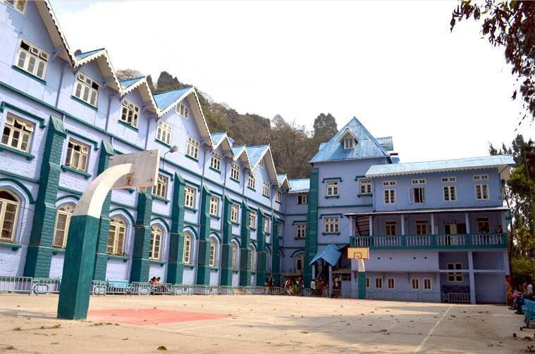
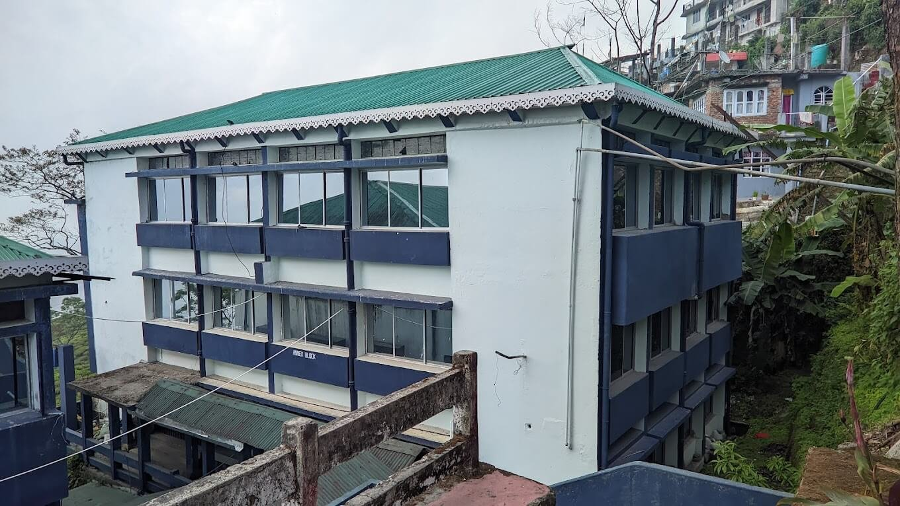
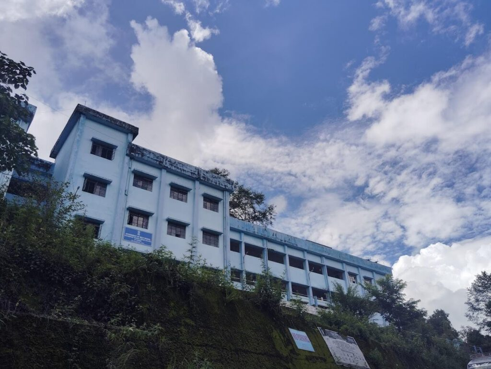
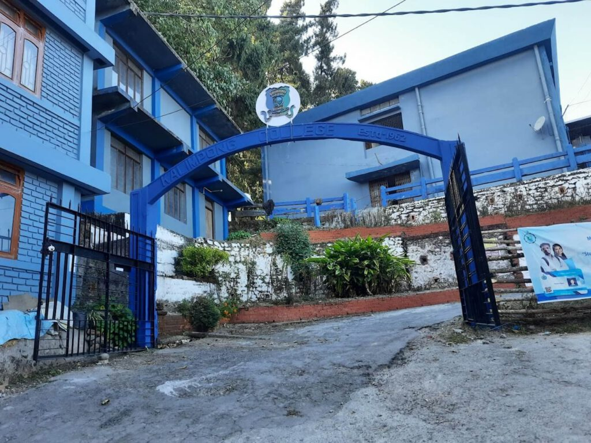
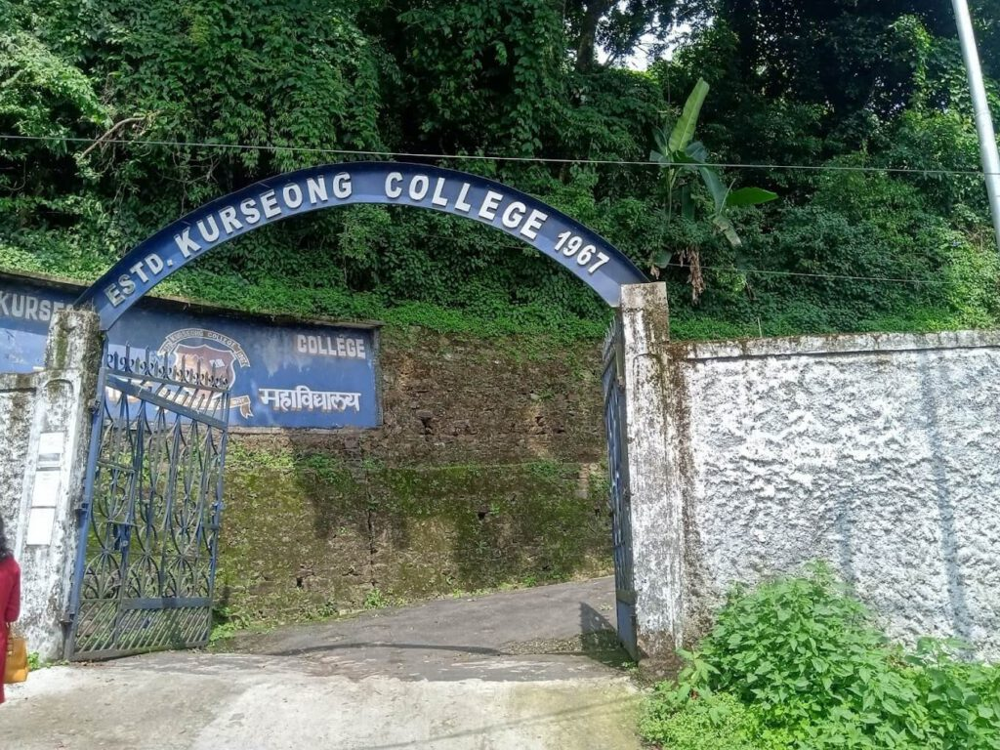
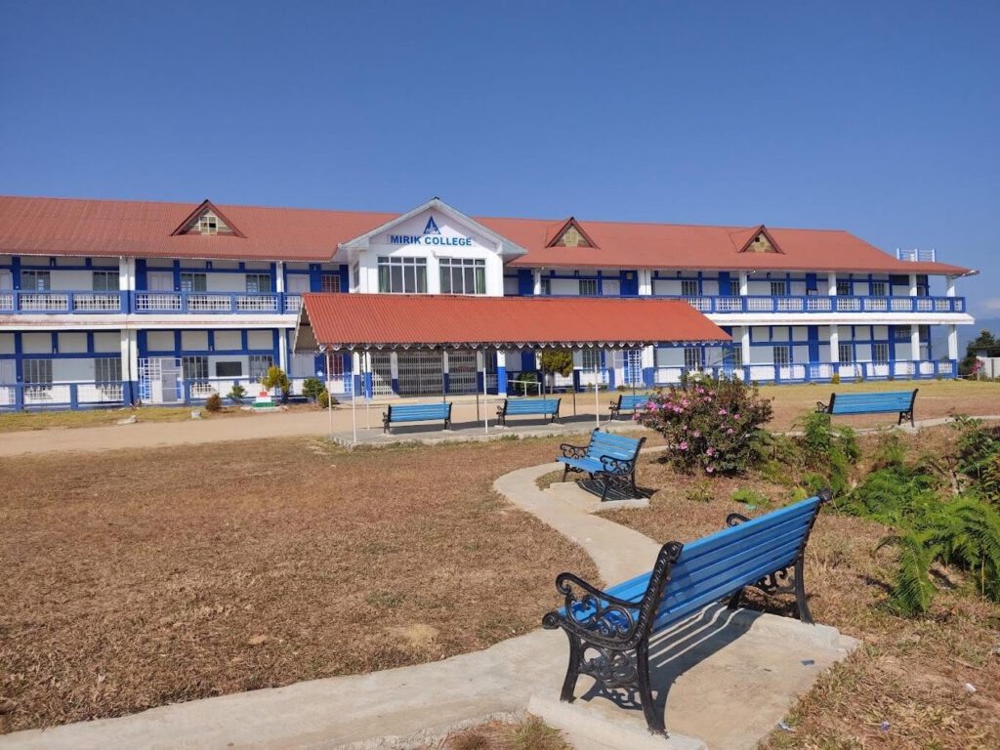
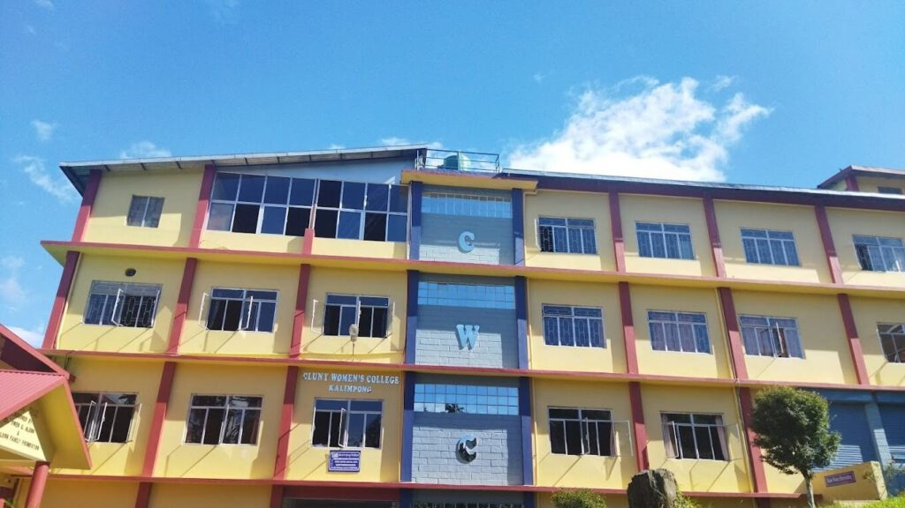
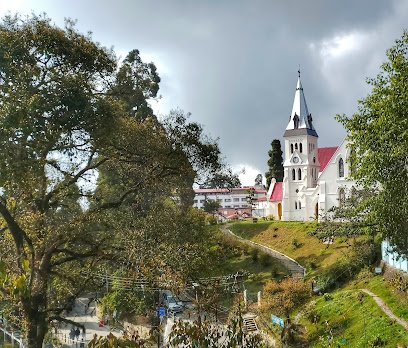
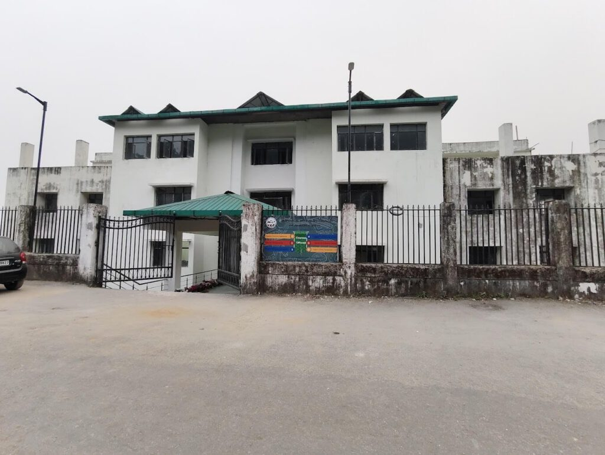
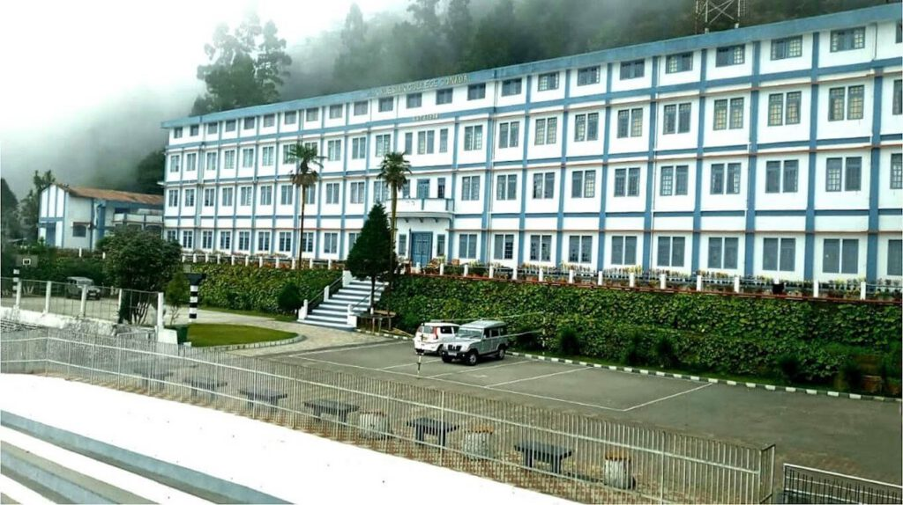

Choosing the right college is one of the first big steps in shaping your academic path. Darjeeling and Kalimpong together offer a wide mix of well established government colleges, mission run institutions and newer private institutes. Each college has its own strengths, courses and fee structure so it can get confusing for students and parents to compare everything in one place.
In this blog we have put together a straightforward list of the main colleges across both districts along with key details like available programmes and an approximate fee range. The aim is to give you a clear starting point and help you understand which college matches your goals and budget without going through dozens of different websites.
If you are exploring higher education options in the hills this guide will make your decision a lot easier.
Government Colleges:-
Darjeeling Government College

Darjeeling Government College has been around since 1948 and is one of the older public colleges in the town. It offers a wider set of courses including science, arts, commerce and some postgraduate options. The college has served local students for decades and is well known in the district for being a government run college with reasonable fees. The college also conduct social awareness programs and provide National Cadet Corps (NCC) and National Social Service (NSS) training to interested students. Sports and hostel facilities are also available in the campus.
Courses Offered: B.A., B.Sc., B.Com, M.A., M.Sc and PHD
Affiliation: University of North Bengal
Fees: The total course fee ranges between Rs. 3,000 to 6,000.
Website- https://www.dgc.ac.in
Contact Details:
Mobile No.- 03542255020
Email: info@dgc.ac.in
Address: 15, Lebong Cart Road Above PWD Car Parking, P.O. & District- Darjeeling, 734101
Darjeeling Hills University
Darjeeling Hills University is a newer public university, set up in 2021 to serve higher education needs of the hills. It was established under state legislation and started operations in recent years. Formerly, it was known as Greenfield University. The university offers postgraduate degrees only in English, History, Mass Communication, Mathematics, Nepali and Political Science and is planning to launch postgraduate courses in Geography and Psychology in 2026.
Courses Offered: M.A. and M.Sc
Fees: The total course fee ranges between Rs. 15,000 to 75,000.
Website- dhu.edu.in
Contact Details:
Mobile No.- 03532776366
Email: contact@dhu.edu.in
Address: ITI Building, Bhasmey, Mungpoo, District Darjeeling, West Bengal, 734313
Darjeeling Polytechnic

Darjeeling Polytechnic College was founded in 1964. It offers diploma courses in common engineering branches and gives students hands on training through well equipped labs and workshops that support practical learning. The aim of the institute is to give good quality technical education and prepare skilled, knowledgeable diploma engineers who become responsible members of society.
Courses Offered: Diploma in Civil Engineering, Electrical Engineering and Computer Science & Technology
Fees: The total course fee ranges between Rs. 4,000 to 5,000.
Affiliation: West Bengal State Council of Technical and Vocational Education and Skill Development
Website- https://polytechnic.wbtetsd.gov.in/darjeelingpoly
Contact Details:
Mobile No.- 03542344434
Address: ITI Building, Bhasmey, Mungpoo, District Darjeeling, West Bengal, 734313
Government General Degree College

This is a government college set up to expand access in the Pedong area it was established in 2015. The college offers undergraduate courses in arts and science and aims to give students from the more remote parts of the region an option to study locally rather than relocate. Since it is a government college, the fees are low. The campus is small and has basic facilities. This college presently also offers Four Year Under Graduate Degree Programme Major and Minor in Arts (English, History, Nepali, Political Science and Sociology) and Science stream (Geology, Chemistry, Mathematics and Physics).
Courses Offered: B.A. and B.Sc
Fees: The total course fee ranges between Rs. 11,000 to 12,000
Affiliation: University of North Bengal
Website- http://pedongcollege.in/
Contact Details:
Mobile No.- 08345064048
Email: pedong.govt.college@gmail.com
Address: 1st Turn, Pedong Reshi Rd, Pedong, West Bengal 734311
Kalimpong College

Kalimpong College is the oldest college for higher education in Kalimpong. It was started on 12 November 1962. The college was made to give higher education to the people of this backward area. It offers undergraduate courses in Arts, Commerce, and Science. The college tries to give good quality education with smart classrooms, regular seminars, Wi-Fi campus, and well-equipped labs that help students learn better.
Courses Offered: B.A., B.Sc and B.Com
Fees: The total course fee ranges between Rs. 36,000 to 40,000
Affiliation: University of North Bengal
Website- https://www.kalimpongcollege.ac.in
Contact Details:
Mobile No.- 08910864377
Address: 3F58+RQ2, Rinkinpong Rd, Kalimpong Khasmahal, Kalimpong, West Bengal 734301
Kurseong College

Kurseong College started in 1967 and is the main college serving Kurseong town. It began as a community effort in a church and later grew into a regular undergraduate college. The college focuses on arts, commerce and science at the undergraduate level and offers honours options in humanities subjects like English, Nepali, History, Geography, Political Science and Economics, and in Science stream, it provides courses in botany, zoology ,maths & chemistry. The campus size and staff are modest and the vibe is local and practical.
Courses Offered: B.A., B.Sc, B.Com and M.A. (Nepali)
Fees: The total course fee ranges between Rs. 2,000 to 3,000
Affiliation: University of North Bengal
Website- http://kurseongcollege.net/
Contact Details:
Mobile No.- 06296258920
Address: Dowhill Rd, Kurseong, West Bengal 734203
Mirik College

Mirik College was established in 2000 to provide higher education access to students from Mirik and surrounding hilly areas. It is a government aided undergraduate college. The college offers only Arts courses, with honours in subjects like English, Nepali, History, Political Science, and Economics.Its mission is to provide quality education to students from the region and help them build a strong foundation for further studies or careers.
Courses Offered: B.A.
Fees: The total course fee ranges between Rs. 4,000 to 5,000
Affiliation: University of North Bengal
Website- http://mirikcollege.co.in/
Contact Details:
Email: mirikcollege056@gmail.com
Address: Kawley, Ward No. 6, Mirik, West Bengal, India – 734214
Mission-Run & Public-Private Partnership Colleges:-
Cluny Women’s College

Cluny Women’s College was started by the Sisters of St Joseph of Cluny in 1998 to promote women’s higher education in the hills. It is a government aided Christian minority college affiliated to the University of North Bengal. The college mostly offers undergraduate arts courses with a focus on creating opportunities for girls from Kalimpong and nearby areas.
Courses Offered: B.A., B.Com and B.C.A
Fees: The total course fee ranges between Rs. 45,000 to 50,000
Affiliation: University of North Bengal
Website- https://www.clunycollege.ac.in
Contact Details:
Mobile No.: 03552796385
Email: cwc@rediffmail.com
Address: 8th Mile, P.O. Kalimpong, West Bengal, 734301
Southfield College

Southfield College, earlier known as Loreto College, is a women’s college in Darjeeling.It started in 1961.The college is under North Bengal University. It mainly offers arts and commerce courses. Students can do honours in English, Nepali, History, Political Science, and Economics. The college was made to give girls from the hills a good chance to study and build their future. The campus is simple and friendly, with the basic things needed for learning. Teachers are supportive, and students are encouraged to join different extra activities along with their studies.
Courses Offered: B.A.
Fees: The total course fee ranges between Rs. 11,000 to 22,000
Affiliation: University of North Bengal
Website- https://southfieldcollege.org
Contact Details:
Mobile No.: 03542254238
Address: Mall Road, Chauk Bazaar, Darjeeling, West Bengal, 734101
Darjeeling Hill Institute of Technology and Management

This is the new engineering and technical institute set up in the hills as a Public Private Partnership model this year and it focuses on engineering and some professional courses. It was established very recently to give students in the region a technical education option close to home.
Courses Offered: B.Tech and B.H.M
Fees: The total course fee ranges between Rs. 4,00000 to 6,00000
Affiliation: MAKAUT
Website- https://dhitm.co.in
Contact Details:
Mobile No.: 09040940155
Address: Hum Tukdah Khasmal, Rangli Ranglot Tea Garden, Takdah, West Bengal 734222
Private Colleges:-
Salesian College (Autonomous)

Salesian College (Autonomous), a Catholic Church minority educational institute was established in 1938 in Sonada. The college was founded to cultivate individuals to make them noble citizens and leaders. The college is run by the Salesians of Don Bosco. It offers undergraduate courses in Arts, Commerce, and some professional subjects. The campuses have libraries, smart classrooms, labs, auditoriums, AV halls, reading rooms, knowledge centers, and sports facilities. The college also cares a lot about social responsibility. It gives chances to first-generation students from nearby tea gardens and even runs a community radio station for the local people.
Courses Offered: BA, B.Com and BCA
Fees: The total course fee ranges between Rs. 300,000 to 400,000
Affiliation: University of North Bengal
Website- https://salesiancollege.ac.in
Contact Details:
Mobile No.: 03542222147
Email: office.scs@salesiancollege.net
Address: Hill Cart Road, Ring Tong Tea Garden, Sonada, West Bengal, 734209
St. Joseph’s College

St Joseph’s College has roots going back to the school established in 1888 and the college section began functioning from 1927. It is run by the Jesuits and offers both undergraduate and postgraduate programmes in science, humanities and commerce. The college has a strong academic record in the hill region and often features in lists of prominent institutions from Darjeeling.
Courses Offered: BA, B.Com, B.Sc, B.C.A and M.A.
Fees: The total course fee ranges between Rs. 50,000 to 150,000
Affiliation: University of North Bengal
Website- https://sjcdarjeeling.edu.in
Contact Details:
Mobile No.: 03542252550
Email: info@sjcdarjeeling.edu.in
Address: Lebong Cart Road, North Point, Darjeeling, West Bengal 734104
Ghoom Jorebunglow Degree College

Ghoom Jorebunglow Degree College started around 2004 and serves the Ghoom and surrounding localities. It is an affiliated undergraduate college offering arts subjects such as English, Geography, History, Nepali, Political Science, Sociology and Economics. The college is small and community oriented and the fees are low as it is affiliated to the state university. This college is useful for students from the Senchal and Ghoom area who want a local option for a bachelor degree.
Courses Offered: B.A.
Fees: The total course fee ranges between Rs. 80,000 to 110,000
Affiliation: University of North Bengal
Website- https://ghoomjorebunglowcollege.com/
Contact Details:
Mobile No.: 09832436213
Email: admin@ghoomjorebunglowcollege.com
Address: Senchal Road, Senchal, Darjeeling, Senchal Forest, West Bengal 734102
Choosing a college becomes much easier when all the important information is placed in one place. The colleges in Darjeeling and Kalimpong offer a good mix of arts, science, commerce and professional courses and each institution has its own environment and fee level. Many students also look at options in Siliguri since it is close by and has more course variety, so it becomes easier to compare everything together.
The goal of this guide was to give you a clear overview so you can compare options based on your subject interest budget and the type of campus experience you want. If you are also considering colleges outside the hill area, Siliguri has several good options
November 21, 2025
Digital Marketing Strategies for Offbeat Homestays in North...

November 21, 2025